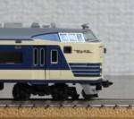
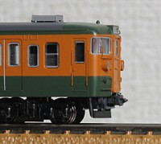
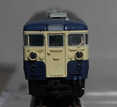
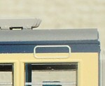
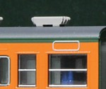
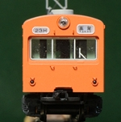
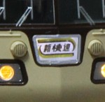
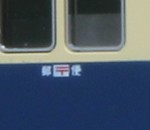

電車
|  |
583系トミックスの583系です。あちこち色入れして落ち着かせました。 |
|  |
115系0番台αモデルのキットを組みました。 |
|  |
115系0番台 山スカαモデルではなく、KATOベースです。 |
|  |
115系300番台 山スカ追って発売された、300番台です。 |
|  |
115系300番台 湘南色今度は湘南色。115系好きみたいです。 |
|  |
中央線の101系久しぶりの115系以外。相変わらず800番台も。 |

|
119系KATOの飯田線シリーズ。 |
|  |
117系シティーライナーです。 |
|  |
荷電たち主に中央線の荷電たちです。 |